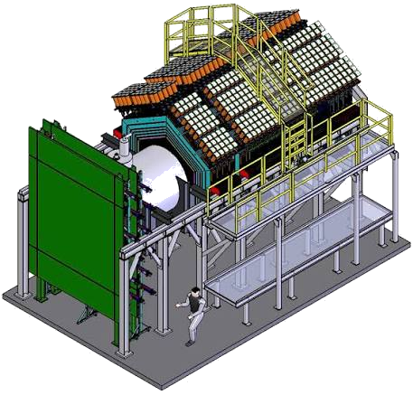
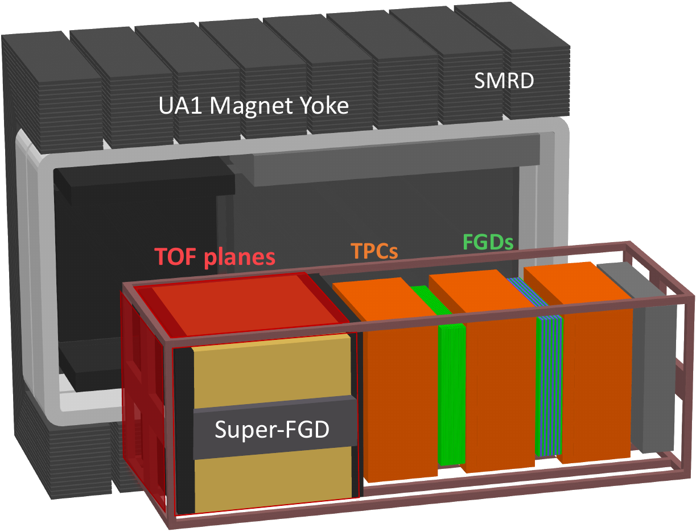
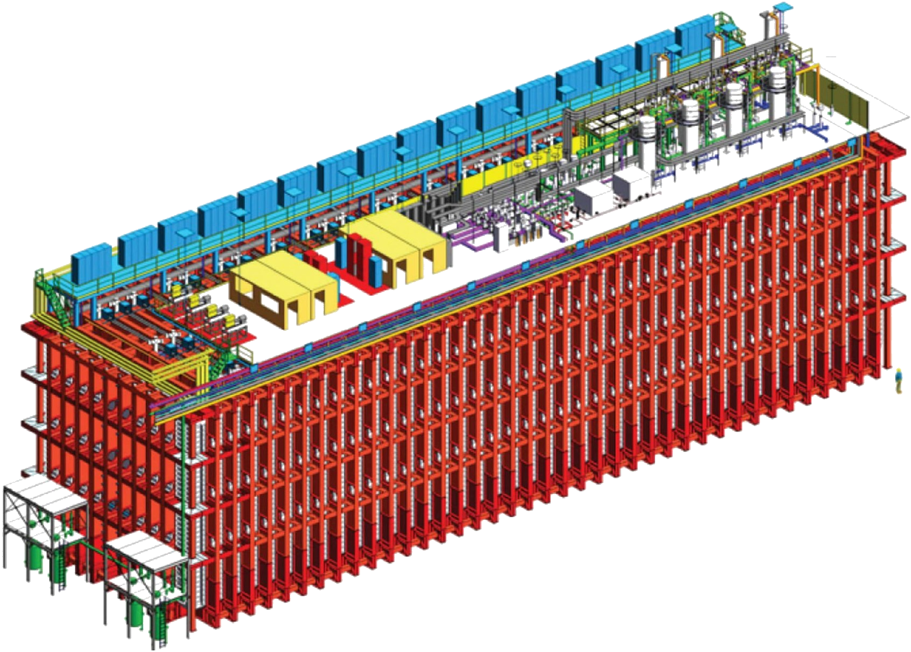
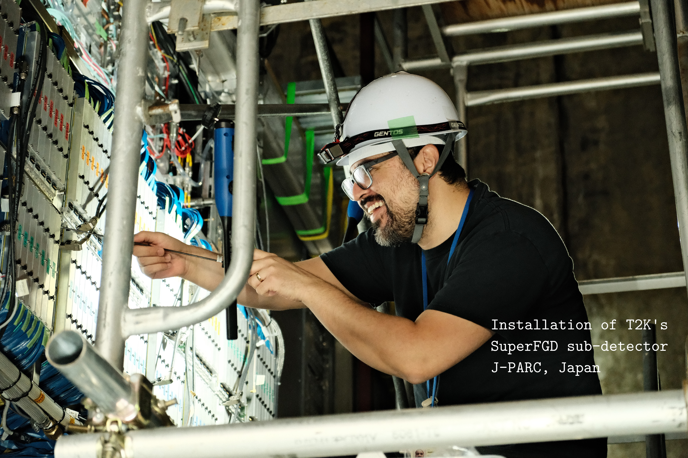

Education
- B.S. on Electrical Engineering
- Master's on Physics
- PhD on Physics (thesis)
- Machine Learning specialization by Stanford online (certificate)
Experience
Postdoctoral Fellow - UPenn

MINERvA Experiment- Computing coordinator
- Detector operations, MINERvA and MINOS detectors
- Energy validation of the e- / e+ beam
- MINERvA software training to DUNE

T2K Experiment- SuperFGD design and commissioning
- Calibration and neutron analysis in SuperFGD

DUNE Experiment
Dr. Alejandro Ramírez
Electrical Engineer / Particle Physicist / Software Developer
Welcome to my personal webpage! I am an electrical engineer, particle physicist, and software developer, with a passion for "creating and analyzing data".
I have worked on the MINERvA experiment at the Fermi National Accelerator Laboratory (Fermilab) as computing coordinator and publishing findings on neutrino interactions; and on the T2K experiment at the Japan Proton Accelerator Research Complex (J-PARC), building the new SuperFGD.
Analyzing Particle Physics
Joint neutrino oscillation analysis from the T2K and NOvA experiments (Nature)First Joint Oscillation Analysis of Super-Kamiokande Atmospheric and T2K Accelerator Neutrino Data (PRL)
Neutrino-Induced Coherent 𝜋+ Production in C, CH, Fe, and Pb at ⟨𝐸𝜈⟩∼6 GeV* (PRL)
Simultaneous Measurement of Muon Neutrino 𝜈𝜇 Charged-Current Single 𝜋+ Production in CH, C, H2O, Fe, and Pb Targets (PRL)
Measurement of the axial vector form factor from antineutrino–proton scattering (Nature)
Talking About Particle Physics
15th Conference on the Intersections of Particle and Nuclear Physics, 202529th International Symposium on Particles, String and Cosmology, 2024
20th International Conference on Calorimetry in Particle Physics, 2024
Joint Experimental-Theoretical Physics Seminar (FNAL's Wine & Cheese), 2022
14th Conference on the Intersections of Particle and Nuclear Physics, 2022